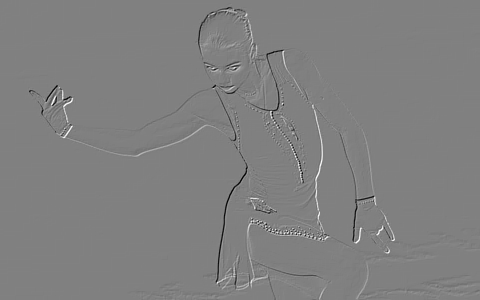
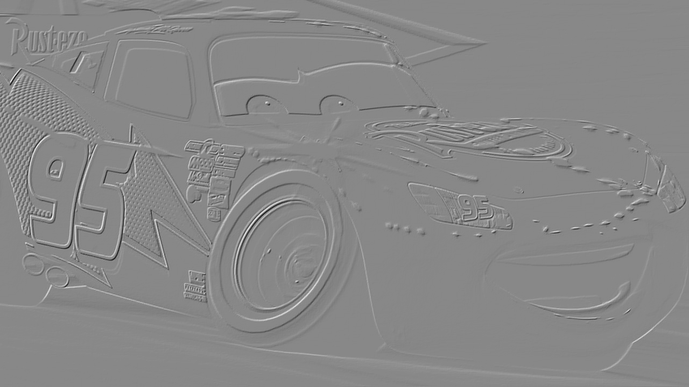
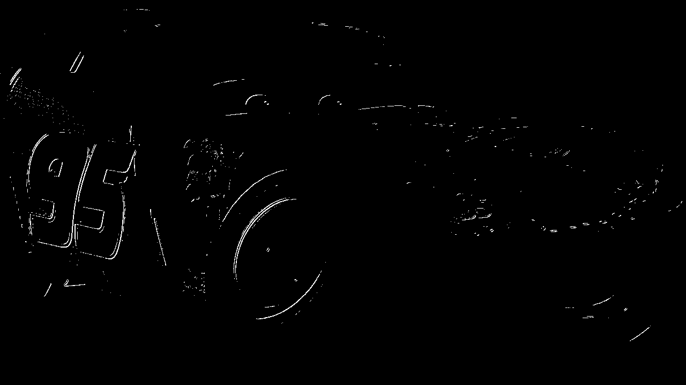

Лабораторная
работа №4 Выделение контуров на изображении
Пример 1
1. Исходное цветное
изображение

2. Полутоновое изображение

3. Градиентные матрицы
3.1 Градиентная матрица Gx

3.2 Градиентная матрица Gy

3.3 Градиентная матрица G
4. Бинаризованная
градиентные матрица
Пример 2
1. Исходное цветное
изображение

2. Полутоновое изображение
3. Градиентные матрицы
3.1 Градиентная матрица Gx

3.2 Градиентная матрица Gy

3.3 Градиентная матрица G
4. Бинаризованная
градиентные матрица
